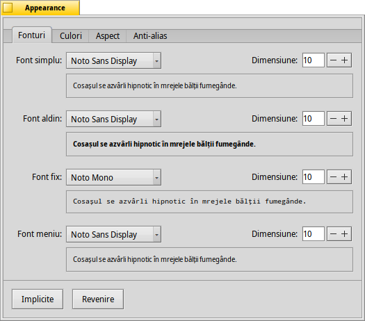
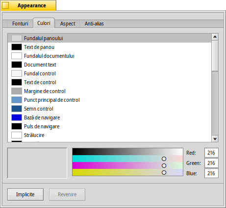
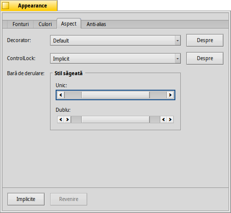
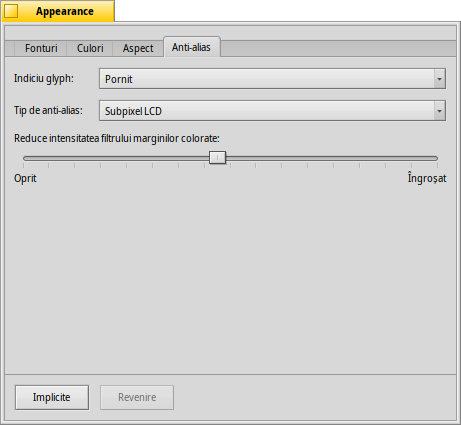

Română
Română Català
Català Deutsch
Deutsch English
English Español
Español Français
Français Italiano
Italiano Magyar
Magyar Polski
Polski Português
Português Português (Brazil)
Português (Brazil) Slovenčina
Slovenčina Suomi
Suomi Svenska
Svenska 中文 ［中文］
中文 ［中文］ Русский
Русский Українська
Українська 日本語
日本語 Appearance
Appearance
| Deskbar: | ||
| Locație: | /boot/system/preferences/Appearance | |
| Configurări: | ~/config/settings/system/app_server/appearance ~/config/settings/system/app_server/fonts |
Preferințele Appearance vă permite să modificați unele aspecte vizuale ale Haiku.
 Fonturi
Fonturi

Haiku definește trei fonturi standard pentru scopuri diferite. Stabiliți tipuri și dimensiuni de font plan, aldin și fixat care vor fi utilizate în întreg sistemul. Pe lângă acestea, există de asemenea o configurare separată pentru fontul utilizat în meniuri.
Instalare fonturi noi
Fonturile noi care nu vin ca parte a unui pachet .hpkg uzual, pot fi instalate prin copierea acestora într-un subdosar în funcție de tipul de font (psfonts sau ttfonts) în dosarul non-packaged respectiv (vedeți subiectul Filesystem layout). Pentru fonturi TrueType ar fi:
| /boot/system/non-packaged/data/fonts/ttfonts/ | pentru fonturi disponibile fiecărui utilizator. | |
| /boot/home/config/non-packaged/data/fonts/ttfonts/ | pentru fonturi disponibile doar pentru tine. |
Culori

In the tab, you can change the colors of different parts of the user interface. The color well accepts drag&drops from other programs, letting you drag colors over from e.g. WonderBrush, Icon-O-Matic or the Backgrounds panel.
Decorator fereastră

Decorators determine the look and feel of windows and all GUI elements. Currently Haiku comes with only one default decorator. Should you find and install other decorators, you can choose a different one from the pop-up menu.
Haiku's default decorator lets you set the arrow style of the scroll bar: either single arrows at the end of scrollbars to conserve a bit of space, or double arrows — the traditional BeOS way — potentially saving some mouse moving when scrolling up and down or left and right...
Antialias

Tabul oferă diferite configurări pentru modul în care sunt randate obiectele pe ecran.
Sugestii Glyph
An activated aligns all letters in such a way that their vertical and horizontal edges rest exactly between two pixels. The result is a perfect contrast, especially when dealing with black on white. Text appears crisper. There's also a setting for that's especially helpful with low resolution devices like netbooks. Small fonts can look pretty bad when hinting is turned on, but with this setting you still have the advantage of hinting for text editors and Terminal.
Vedeți diferența pe care o fac sugestiile cu aceste capturi de ecran mărite:
 Sugestii: dezactivat |  Sugestii: activat |
It should be pointed out that all the Magnify windows on this page are of course rendered themselves with the different options as well. So, you get a real world impression of the settings by comparing, for example, the bold yellow tab title or the text "33 x 15 @ 8 pixels/pixel".
Tip de antialias
Another technique to improve rendering is Antialiasing, which supports all vector graphics as well as text. It smooths lines by changing the color of certain pixels. There are two methods for that:
changes the intensity of pixels at the edge.
does an even better job, especially with (high resolution) LCD monitors. Instead of the intensity of a pixel, it changes its color which moves an edge by a fraction of a pixel, because LCD displays produce every pixel with a red, green and blue component.
Again, the two different methods with magnified screenshots:
Grayscale, Hinting: off | LCD subpixel, Hinting: off |
Subpixel based antialiasing adds a slight colored shine to objects. Something not everyone tolerates. In Haiku you can mix the two antialiasing methods and find the right setting for you by using a slider.
Dacă activați sugestiile și randarea subpixel LCD prin modificarea sursei și recompilare, iată cum arată în comparație cu sugestiile în scală de gri:
Scală de gri, Sugestii: activat | Subpixel LCD, Sugestii: activat |
La baza panoului există două butoane:
| resetează totul la valorile implicite. | ||
| aduce înapoi configurările care au fost active atunci cînd ați pornit preferințele Appearance. |